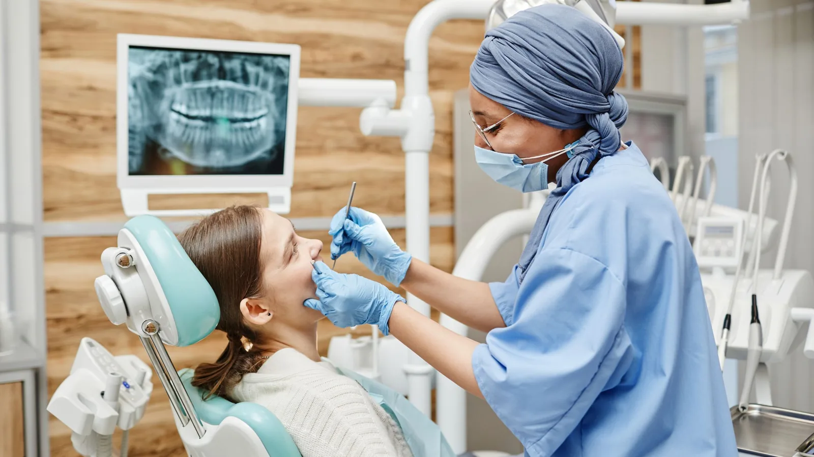

Dental Implants
Building the site up before the implant goes in.
An implant needs bone to hold it. Where a tooth has been missing for years, or was lost through infection or trauma, the bone that once supported it will often have resorbed — sometimes enough that there is no longer room to place an implant safely.
Bone grafting rebuilds that site. Graft material is placed where bone is deficient, and over several months your own bone grows into and replaces it, producing a site with enough volume to take an implant.

When it is needed
Grafting is considered where CBCT imaging shows insufficient bone height or width, where the sinus sits too low in the upper jaw, or where a socket is being preserved immediately after an extraction to limit the resorption that would otherwise follow.
That last case is worth knowing about. The greatest bone loss happens in the first months after a tooth comes out. Where an implant is likely later, grafting the socket at the time of extraction can save a larger procedure down the track. It is a conversation worth having before the tooth is removed rather than after.
Assessment
CBCT imaging is essential here. A standard X-ray shows height in two dimensions but tells you nothing about width, and width is often the limiting factor. Three-dimensional imaging shows exactly how much bone is present, where the nerve and sinus sit, and therefore what kind of graft — if any — is required.
Dr Meg has completed advanced training in bone augmentation and flap surgery, including an intensive course in implant grafting techniques.
Dr Meg is a general dentist and is not registered as a specialist in implant or oral surgery.
What is involved
Grafting is carried out under local anaesthetic. The gum is raised, the graft material placed and secured, often with a protective membrane over it, and the site closed with sutures.
In some cases the graft can be placed at the same time as the implant. In others the graft has to heal first — typically several months — before the implant can be placed. Which applies depends on how much bone is missing and how stable the implant would be.
Expect some swelling and soreness for several days afterwards, and written aftercare instructions covering diet, cleaning and what to watch for.
Honest expectations
Grafting adds time, cost and a further surgical stage to implant treatment. It also does not always produce the volume hoped for, and occasionally a graft does not integrate as intended. These are things to understand before you commit, and Dr Meg will go through them with you rather than glossing over them.
Where the bone deficiency is beyond what is sensible to manage in general practice, she will refer you.
Frequently asked questions
Bone loss varies enormously depending on how long the tooth has been missing, why it was lost and individual healing. Imaging tells us what is actually there in your case.
Where the graft is placed separately, typically several months of healing before the implant goes in. Where graft and implant are placed together, the timeline is the same as a standard implant. This is confirmed at your planning appointment.
Several types are used depending on the site and the volume required. Dr Meg will explain what she is recommending in your case and why before you consent.
It is done under local anaesthetic. Swelling and soreness for several days afterwards is normal and is managed with ordinary pain relief. No dentist can promise a completely pain-free procedure.
It can, though it is not common. Smoking, infection, poor healing and certain medical conditions increase the risk. If a graft does not integrate as intended, we will discuss the options at that point.
Sometimes. Depending on the site, a shorter or narrower implant, a different implant position, or a non-implant option such as a bridge or partial denture may avoid the need. All of these are discussed at your assessment.